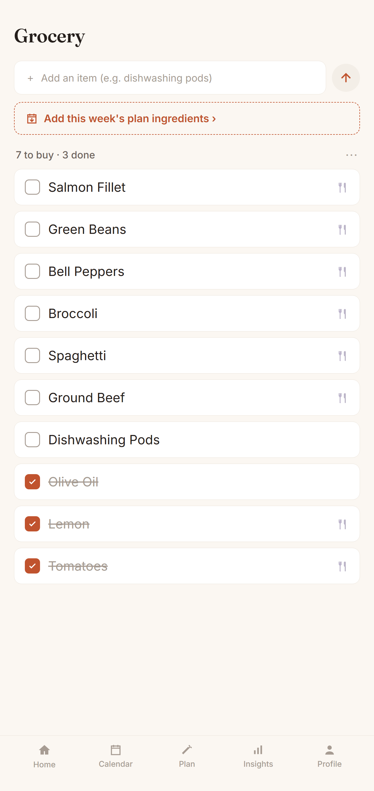
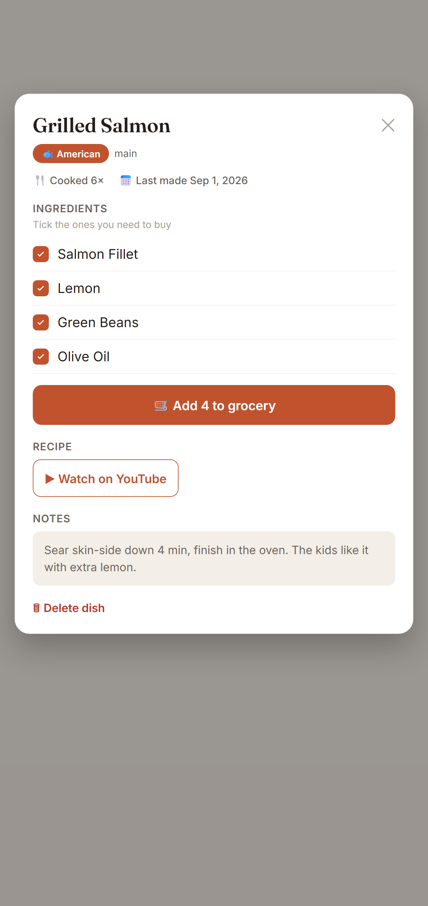
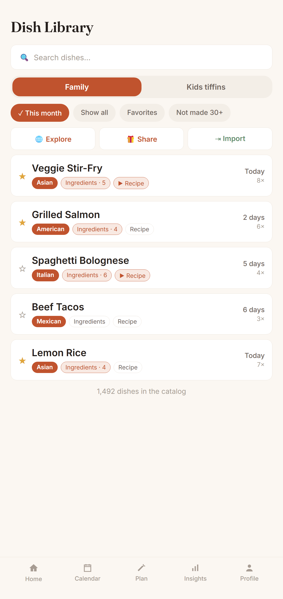

Log what your family eats — Sofra plans your week from it and shows where your food money really goes.
No recipe browsing, no calorie guilt. Just your real food habits, turned into effortless plans and honest insights — for any family, any cuisine, anywhere.
FreeNo adsPrivate to your household

Log a meal, plan the week, see where your food really goes — the whole loop, start to finish.
Most meal apps give you new recipes to try. Sofra does the opposite — it gives you back the meals your family already makes and forgets. It's a memory tool, not a discovery tool.
Every meal you log is remembered forever — searchable, sortable, always yours. Whiteboards erase; Sofra doesn't. And it surfaces the dishes hiding in your back catalogue: "It's been 87 days since Lasagna."
Auto-generate a week from what your family actually cooks — balanced across cuisines, avoiding recent repeats — then pull every ingredient into a shared grocery list in a tap. A little confetti when you accept it.
See your home-cooked ratio and exactly where your food budget goes — the pattern most families never notice. Then turn any insight into a branded card and share it in a tap.
Every meal is marked veg or non-veg with the familiar dot — detected automatically as you type — so your household's balance shows up on meals, history, and insights.
Plan a separate kids-tiffin menu alongside family meals, with repeat-alerts to beat tiffin fatigue.
Everyone in the family adds and sees meals in real time. A single source of truth for the kitchen.
One shared household checklist. Pull in the ingredients for this week's — or next week's — planned dishes in a tap, add anything else by hand, and tick items off as you shop.
Keep the recipe where it belongs — on the dish. Paste a YouTube video, a link, or type your own "how I make it" steps, and open it in a tap right from the meal card.
Send another family your dishes with a single code — they pick what to import. Recipes and ingredients come along; your meals, ratings, and spending never do.
"What's for dinner?" answered in one tap — cook a recent dish again, let Sofra decide for you, or log leftovers without inventing a fake meal.
Four taps a week is all it takes. Here's what that looks like — a terracotta-and-sage design built to feel like a home kitchen, in light and dark mode.
Open Sofra to see the month in one calm dashboard: your home-cooked ratio, outside spend against budget, unique dishes, and today's meals. No setup, no clutter — just where things stand.

Autocomplete from your own history and smart time-of-day defaults mean a meal goes in with a tap or two. Home, takeout, or dine-out — even a full plate with all the sides.

Tap once and Sofra drafts the week from what your family actually cooks — balanced across cuisines, skipping recent repeats. Swap anything you like, then send the ingredients straight to your grocery list.

Home vs. outside, spend against budget, your most-loved dishes and the ones you've forgotten. The honest patterns most families never notice — and every one turns into a share-ready card.





Ten-second logging with autocomplete and quick-picks. Home meals, takeout, dine-outs — even a full plate with all the sides.
After a week or two, Sofra knows your family's dishes, cadence, and spending.
Auto-plan the week, spot spending patterns, and rediscover dishes you'd forgotten.
No — it's a memory tool. Sofra remembers the meals your family already makes and plans from those, instead of pushing new recipes at you.
iPhone and Android — on the App Store and Google Play. Light and fast, with full light and dark mode.
Whatever you prefer: Sign in with Google, Sign in with Apple on iPhone, or a plain email and password.
You share one household. Everyone adds and sees meals together, in sync — a single source of truth for the kitchen.
Yes. Add a profile photo from your camera or gallery, and edit your display name anytime from your profile.
Sofra is free to use at launch, with no ads and nothing to buy.
Your meals stay private to your household, encrypted in transit. You can delete your account and all its data anytime from Settings.
No. Just log meals as you go — the planning and insights build themselves from your own history.
Not at all. Sofra works for any family and any cuisine, anywhere — it plans from the dishes you cook, whatever they are. The built-in library spans 1,500+ dishes across the world's cuisines, and you can add your own in seconds.
No. Log as much or as little as you like — logging takes about ten seconds, and the more you add the smarter the plans and insights get. Miss a day? Nothing breaks.
A spreadsheet just stores. Sofra understands — it auto-plans your week, flags forgotten dishes, tracks home-vs-outside spending, and turns it all into share-ready insights. No formulas, no upkeep.
Yes. A household of one works perfectly — you get the same memory, planning, and insights, just for you.
No catch. No ads, and we never sell your data. Sofra is free to use at launch, and your meals stay private to your household.